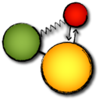

Cinderella.2 Documentation
Welcome to the user's guide! This highly interconnected collection of web pages represents the complete user's guide to The Interactive Geometry Software Cinderella.2. Here you will learn about all important aspects of the program.

Besides support for dynamic geometry, Cinderella.2 has many features that broaden the scope of the program to a wide variety of interaction scenarios. Compared to the old version of the program, two completely new parts were added:
CindyLab, an environment for doing interactive physical experiments, and
CindyScript, a high-level programming language that allows for fast, flexible and freely programmable interaction scenarios. Although each of the three parts of the program (geometry, physical simulation and scripting) can be used in a standalone manner, the programm unleashes its full power when all three parts are used in combination. They are designed to interact very smoothly.
In the documentation, each of the three parts of the program is treated seperately. At the end of each major section, we give examples that take advantage of several of the features explained therein.
Preface
Introduction
Theoretical Background
Quick start
Reference Guide
Appendix